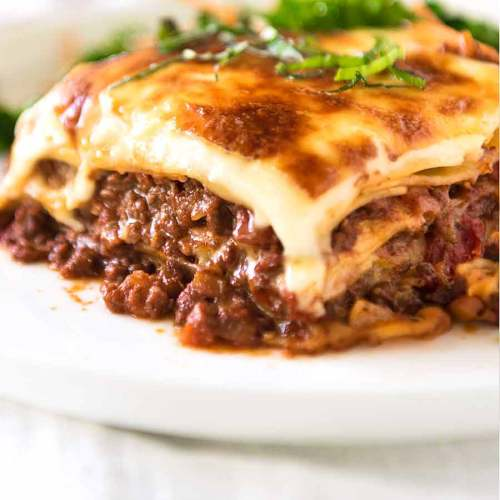

Lasagna

Yummyest lasagna recipe:
Lasagna, lasagna. How I love thee! It is possibly one of the most loved foods
in the whole wide world, and understandably so. There is just something so sentimental
about lasagna, so comforting. It evokes images of of gatherings with family and friends
all around the world. It is the sort of food that is like a big warm hug, and so more-ish
you want to keep digging in until you burst.
OK, bit more than a wee bit more patience. But it’s totally worth it. A real homemade
Lasagna is epic.
Ingridients
- Onion, garlic, carrot and celery – for the flavour base, a soffrito;
- Beef
- Canned tomato and tomato paste
- Red wine – for extra flavour!
- Seasonings – beef bouillon cubes (stock cubes), bay leaves, thyme, oregano, Worcestershire sauce
Steps
- Smear a bit of meat sauce on the base first – stops the lasagna sheets from sliding around;
- Layer 1 – top with meat sauce, bit of white sauce
- Layer 2 – lay out more lasagna sheets, then top with more meat sauce and more white sauce
- Layer 3 – repeat again, lasagna sheets, meat sauce then white sauce; and
- Topping – cover with lasagna sheets, pour over remaining white sauce then sprinkle with cheese.